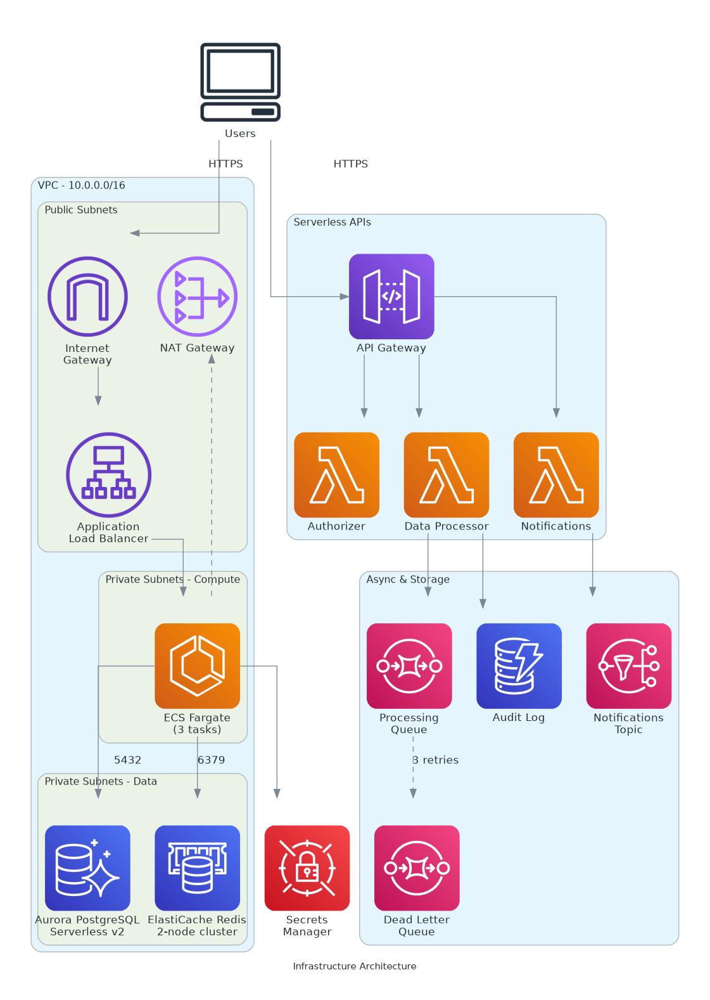
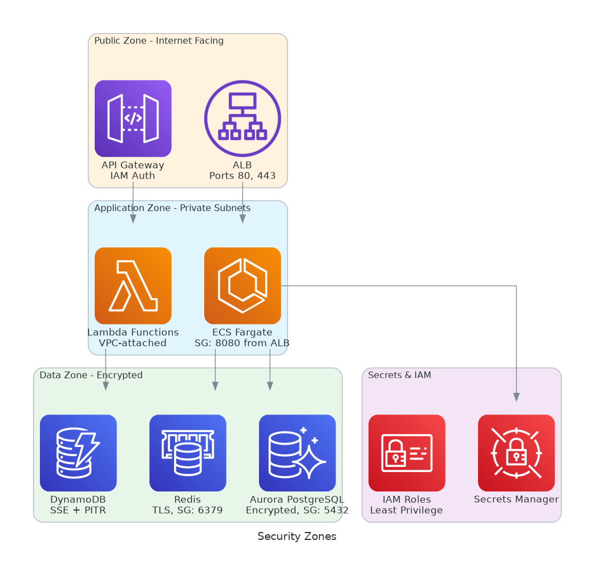
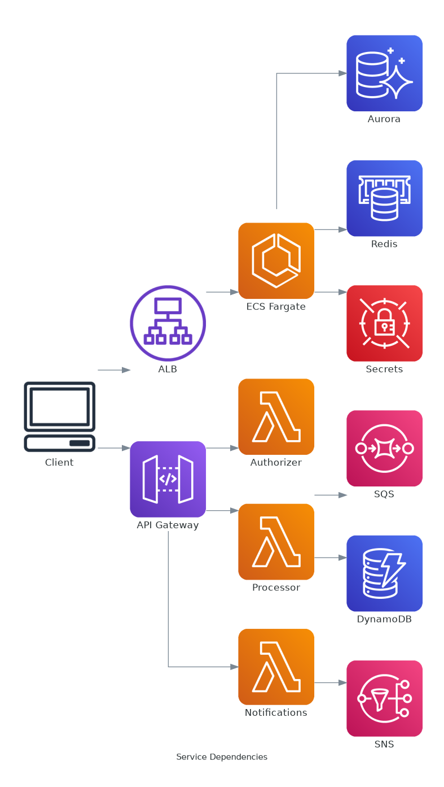

Automatic Infrastructure Diagrams on Every Commit
Push a Terraform or CloudFormation change → GitHub Action parses IaC → Bedrock generates AI summary → Mermaid diagrams committed to repo
AI-Powered Deployment Failure Troubleshooting
Deployment fails → Collect logs + Wiz findings → Bedrock diagnoses root cause → GitHub Issue with remediation plan
🏗️ Network Topology (Official AWS Icons)
Generated using the Python diagrams library with official AWS Architecture Icons.

PNG diagram not yet generated. Run the workflow to produce it.'" />🔒 Security Zones (Official AWS Icons)

PNG diagram not yet generated. Run the workflow to produce it.'" />🔗 Service Dependencies (Official AWS Icons)

PNG diagram not yet generated. Run the workflow to produce it.'" />Mermaid Diagrams (GitHub-native rendering)
🏗️ Network Topology (from Terraform + CloudFormation)
🔒 Security Zones
🔗 Service Dependencies
How It Works
Scenario 1: Infrastructure Diagram Generation
IaC Parsing: Scripts extract resource types, names, and relationships from .tf and CloudFormation YAML files. In production, terraform show -json gives the full resource graph from state.
Bedrock Analysis: The parsed resources + git diff are sent to Claude via the Bedrock API. The AI produces a human-readable summary, risk assessment, and diagram annotations.
Diagram Generation: Mermaid diagrams are generated showing network topology, security zones, and service dependencies. GitHub renders these natively in Markdown.
Scenario 2: Deployment Failure Troubleshooting
Log Collection: ECS deployment events, CloudFormation stack events, and CloudWatch error logs are gathered automatically.
Wiz Integration: The Wiz GraphQL API is queried for both vulnerability findings (CVEs in images, misconfigurations) and runtime findings (anomalous network activity, resource abuse, drift detection).
Agentic Diagnosis: All context is sent to Bedrock. The AI can request additional context in a loop (e.g., "show me the task definition") until it has enough information to produce a root cause analysis.
Remediation: A structured GitHub Issue is created with root cause, step-by-step fix, related Wiz findings, and log excerpts.